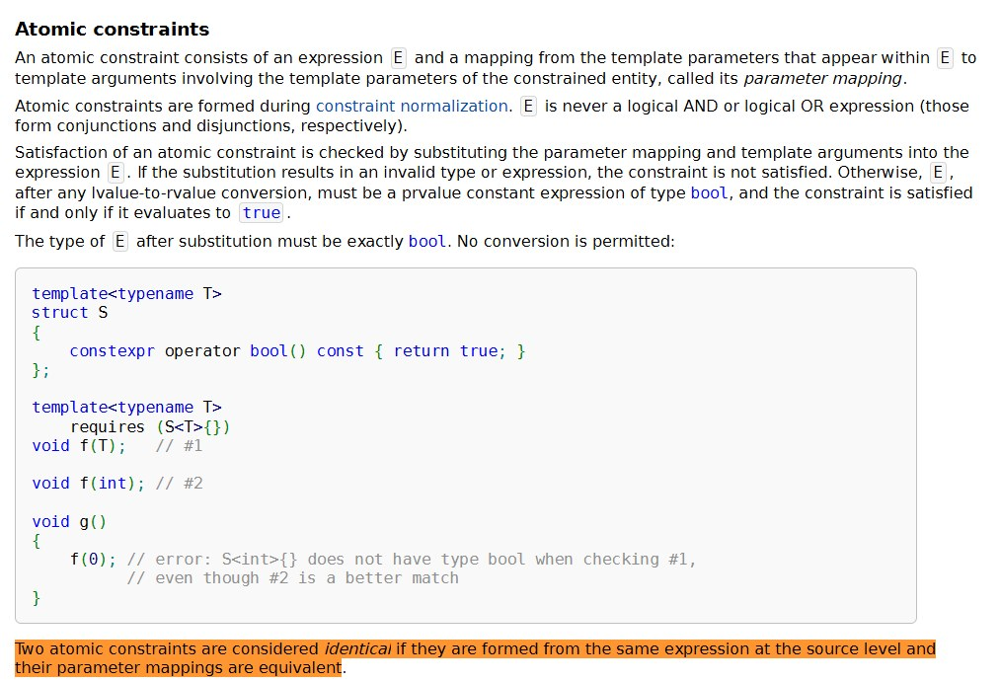

Это пятая глава черновика книги PragmatiC++ — о прагматичном и «понятном через год» C++. Исходный текст главы открыт на GitHub.
В прошлых статьях я разобрал как работают перегрузки и как компилятор находит нужные функции в связанных пространствах имён, но что происходит, когда компилятор находит не одну, а сразу несколько подходящих перегрузок? Особенно актуальным этот вопрос становится при работе с шаблонами и концептами, потому что один и тот же тип может удовлетворять требованиям нескольких функций одновременно и вот здесь в игру вступает механизм выбора наиболее подходящей перегрузки. Без этого выбора вся система requires и концептов работать не будет.
Как компилятор выбирает лучшую перегрузку, если подходящих вариантов несколько? Интуитивно мы ожидаем, что более «точная» функция должна иметь приоритет над более общей и часто это ожидание мы переносим в правила для компилятора при написании шаблонов и ограничений. Общая идея здесь следующая: перегрузки можно не просто перечислять, а выстраивать в иерархию по степени специфичности, тогда одни функции будут описывать широкий класс типов, другие его подмножество, и, когда тип аргумента известен, компилятор должен выбрать ту функцию, чьи требования наиболее точно соответствуют этому типу. Эта логика заложена прямо в стандарте C++ и называется partial ordering, то есть частичный порядок, потому что не все перегрузки обязательно сравнимы между собой.
В основе частичного порядка лежит понятие подчинения (subsumption) или, говоря неформально, один набор требований подчиняет другой, если всякий тип, удовлетворяющий более строгим требованиям, автоматически удовлетворяет и более слабым. В таком случае более строгий вариант считается более специализированным и выигрывает при выборе перегрузки.
Вернемся к примеру с resolve() из предыдущей статьи, когда у нас были две версии функции:
template<typename T>
void resolve(T x) requires std::integral<T>;
template<typename T>
void resolve(T x) requires std::integral<T> && (sizeof(T) > 4);Первая функция принимает любой целочисленный тип, а вторая принимает только те целочисленные типы, размер которых больше четырёх байт. Очевидно, что множество типов второй функции является подмножеством множества типов первой, и любой тип, подходящий под вторую версию, автоматически подходит и под первую, но не наоборот.
Если же мы вызываем resolve(10ull), то обе перегрузки формально подходят: long long это целочисленный тип, и на большинстве платформ его размер больше четырёх байт, и компилятор не оказывается в тупике, потому что сравнивает ограничения и видит, что вторая версия строже, то есть более специализирована и выбирается именно она, без какой-либо неоднозначности и без необходимости дополнительных подсказок со стороны программиста.
Это очень важное отличие от старых техник на базе SFINAE, когда подобное поведение приходилось обеспечивать вручную: добавлять фиктивные параметры, усложнять условия enable_if, следить за порядком перегрузок и надеяться, что компилятор интерпретирует их так, как было задумано.
С концептами же эта иерархия становится частью формальной модели языка, а не побочным эффектом трюков, но при этом стоит помнить, что частичный порядок тоже не панацея от всех ошибок и бывают ситуации, когда два набора требований не подчиняются друг другу. Например, один концепт может ограничивать тип по размеру, а другой по наличию определённой операции, и ни один из них не является более строгим в общем случае. В таких ситуациях компилятор честно сообщит о неоднозначности, потому что с точки зрения формальной логики у него действительно нет оснований предпочесть один вариант другому.
#include <concepts>
#include <iostream>
// Концепт: тип имеет размер больше 4 байт
template<typename T>
concept LargeType = sizeof(T) > 4;
// Концепт: тип поддерживает операцию инкремента
template<typename T>
concept Incrementable = requires(T t) {
{ ++t } -> std::same_as<T&>;
};
// Первая перегрузка: требует большой размер
template<LargeType T>
void process(T value) {
std::cout << "Large type version\n";
}
// Вторая перегрузка: требует инкремент
template<Incrementable T>
void process(T value) {
std::cout << "Incrementable version\n";
}
int main() {
long long x = 42; // Удовлетворяет обоим концептам!
process(x); // Ошибка компиляции: неоднозначность!
// long long это и LargeType, и Incrementable,
// но ни один концепт не строже другого
return 0;
}
<source>:31:5: error: call to 'process' is ambiguous
31 | process(x); // Ошибка компиляции: неоднозначность!
| ^~~~~~~
<source>:18:6: note: candidate function [with T = long long]
18 | void process(T value) {
| ^
<source>:24:6: note: candidate function [with T = long long]
24 | void process(T value) {
| ^Иерархия концептов и механизм частичного порядка вместе позволяют строить перегрузки как систему уточняющих контрактов, где можно начать с общего случая и постепенно добавлять все более и более специализированные версии, не боясь конфликтов и неожиданного поведения. Компилятор берёт эти уточнения, строит на их базе таблицу строгих сравнений и предсказуемо выбирает наиболее подходящую функцию, руководствуясь именно теми требованиями, которые мы явно сформулировали в коде.
Что значит строже
Теперь давайте разберёмся, что именно означает слово «строже» в контексте requires и концептов. Здесь надо сразу отметить, что речь идёт не о субъективном ощущении программиста (неточном соглашении как это было в SFINAE), а о формальном отношении между условиями, которое компилятор умеет анализировать (ограничения).
Интуитивное объяснение будет довольно простым: если из выполнения условия A автоматически следует выполнение условия B, то A считается более специализированным, а B более общим. Или так: множество типов, удовлетворяющих A, является подмножеством множества типов, удовлетворяющих B. Теперь, если компилятору приходится выбирать между перегрузками, он предпочитает ту, чьи требования строже, потому что она описывает более узкий и более точный случай.
Например, условие std::integral<T> && sizeof(T) > 4 строже, чем просто std::integral<T>, потому что любой тип, который удовлетворяет первому условию, обязательно удовлетворяет и второму, но не наоборот. Аналогично, requires (sizeof(T) == 4) строже, чем requires (sizeof(T) >= 1): равенство четырём байтам автоматически означает, что размер не меньше одного байта, но это лишь частный случай более общего условия.
// Общее условие: любой целочисленный тип
template<typename T>
requires std::integral<T>
void process(T value) {
std::cout << "General integral version\n";
}
// Более строгое условие: целочисленный тип размером больше 4 байт
template<typename T>
requires std::integral<T> && (sizeof(T) > 4)
void process(T value) {
std::cout << "Large integral version (size > 4)\n";
}
// Ещё один пример с разными уровнями специфичности
template<typename T>
requires (sizeof(T) >= 1) // Очень общее условие
void display(T value) {
std::cout << "Any type with size >= 1\n";
}
template<typename T>
requires (sizeof(T) == 4) // Более строгое условие
void display(T value) {
std::cout << "Exactly 4 bytes\n";
}
int main() {
int x = 42; // 4 байта на большинстве платформ
long long y = 100; // 8 байт на большинстве платформ
short z = 5; // 2 байта
process(x); // Вызовет первую версию (int обычно 4 байта, не > 4)
process(y); // Вызовет вторую версию (long long > 4 байт)
process(z); // Вызовет первую версию (short < 4 байт)
std::cout << "\n";
display(y); // Вызовет первую версию (sizeof(long long) >= 1, но != 4)
display(z); // Вызовет первую версию (sizeof(short) >= 1, но != 4)
return 0;
}
Program stdout
>> General integral version
>> Large integral version (size > 4)
>> General integral version
>> Any type with size >= 1
>> Any type with size >= 1Компилятор не программист и не рассуждает «интуитивно», как было показано выше, поэтому в стандарте C++ эти отношения строго формализованы через понятие subsumption — подчинения одного набора ограничений другому. Один набор ограничений подчиняет другой, если каждый дизъюнктивный элемент первого включает в себя все конъюнктивные элементы второго. Формулировка звучит тяжеловато, но за ней стоит вполне конкретная логика.
Чтобы иметь возможность сравнивать ограничения, компилятор сначала приводит их к структурированной форме и разбивает выражение requires на элементарные составляющие, рассматривая логические связки && и || не как произвольные выражения, а как логические операции над наборами требований. После этого происходит попарное сравнение этих элементарных условий.
Рассмотрим простой пример с логическим ИЛИ:
requires (std::integral<T> || std::floating_point<T>)Это означает, что тип должен быть либо целочисленным, либо вещественным: то есть допустимы два альтернативных пути выполнения условий, и только если ни один из них не выполняется, ограничение не выполнено. Это дизъюнкция — набор альтернативных требований. А теперь посмотрим на пример с логическим И:
requires (std::copyable<T> && std::movable<T>)Здесь ситуация обратная: обе проверки должны быть истинны одновременно. Тип обязан быть и копируемым, и перемещаемым. Это конъюнкция — набор требований, каждое из которых обязательно.
Ограничения requires компилятор собирает в логические формулы, построенные из атомарных предикатов, соединённых && и ||, не доказывает (потому что так написал Великий Программист) их истинность в общем логическом смысле, а сравнивает их структуру и проверяет, следует ли одно ограничение из другого на уровне синтаксической формы.
И здесь мы подходим к очень важной и часто неожиданной детали, когда два ограничения считаются одинаковыми только в том случае, если они синтаксически совпадают. Логическая эквивалентность в этом случае не играет никакой роли, потому что компилятор не занимается логическими операциями и не упрощает выражения до канонического вида, ну потому что это бы потребовало введение в компилятор математического аппарата для доказательств такого рода.
template<typename T>
concept TrueConcept = true;
template<typename T>
concept AlsoTrueConcept = (C<T> && true);С точки зрения логики и здравого смысла концепты TrueConcept и AlsoTrueConcept эквивалентны, и этому обычно учат студентов первого курса на лекциях по логике. Оба всегда истинны, но для компилятора это будут разные выражения, потому что их синтаксическая структура различается, и стандарт прямо говорит, что такие ограничения не считаются эквивалентными.
Последствия таких «умных» ограничений со стороны программиста могут быть весьма неприятным. Если мы перегрузим функции с requires TrueConcept<T> и requires AlsoTrueConcept<T>, то компилятор окажется в ситуации, когда ни одна из перегрузок не подчиняет другую, потому что они логически равны, но формально несравнимы. В результате мы просто получаем неоднозначность перегрузки, и стандарт разрешает компилятору выдать ошибку вида ambiguous overload, no diagnostics required, то есть даже без гарантии понятного сообщения.
«Two atomic constraints are considered identical if they are formed from the same expression at the source level and their parameter mappings are equivalent.»

И этот момент хорошо иллюстрирует общую философию ограничений и концептов, которые делают шаблонный код более строгим и формальным, но взамен требуют дисциплины от программиста. Если вы хотите, чтобы компилятор видел иерархию и специализацию, выражайте ограничения явно, просто и единообразно, но не стоит полагаться на логические тождества и «очевидные» преобразования — компилятор их делать не будет, потому что у него нет мат. аппарата для этого.
Как работает на практике
Теперь перейдём от формальной модели, которую нам дает стандарт, к практическим последствиям, с которыми сталкивается разработчик в реальном коде. На этом этапе многие разработчики начинают чувствовать лёгкое расхождение между тем, «как кажется, что система должна работать», и тем, «как она работает на самом деле».
Часто возникает ситуация, когда по смыслу одна функция явно должна «подчиняться» другой, но компилятор этого «не видит», и часто причина почти всегда одна и та же — ограничения сформулированы немного по-разному. Для человека эти формулировки выглядят эквивалентными (логическая прямая) или очевидно связанными (логическая кривая), но для компилятора это будут просто разные синтаксические конструкции, между которыми нет формального отношения связи.
Типичные симптомы — неожиданная неоднозначность перегрузки или выбор не той версии функции, которую вы ожидали. В таких случаях проблема почти никогда не в самом механизме requires, а в том, как именно были выражены ограничения, поэтому общий и проверенный приём будет: не дублировать составные ограничения вручную, а выносить их в отдельный концепт. Например, вместо того чтобы писать в нескольких местах:
requires (Resolvable<T> && IsPath<T>)гораздо надёжнее определить единый концепт:
template<typename T>
concept ResolvablePath = Resolvable<T> && IsPath<T>;и затем использовать его напрямую:
requires ResolvablePath<T>Потому что, как только вы немного измените одно из пяти мест, где была такая запись, оставшиеся четыре места будут автоматические отличаться. И бывает доходит до смешного.
// Попытка создать общую и специализированную версию
template<typename T>
requires (Resolvable<T> && IsPath<T>)
void unified_process(T item) {
std::cout << "General version\n";
}
// Специализация с IsAbsolute
template<typename T>
requires (Resolvable<T> && IsPath<T> && IsAbsolute<T>)
void unified_process(T item) {
std::cout << "Specialized for absolute paths\n";
}
// Другой программист добавляет свою версию, но пишет в другом порядке
template<typename T>
requires (IsPath<T> && Resolvable<T> && IsAbsolute<T>) // Другой порядок!
void unified_process(T item) {
std::cout << "Another specialized version\n";
}
// unified_process(fp); // ОШИБКА: ambiguous
// Компилятор видит ДВЕ специализации с IsAbsolute,
// но они синтаксически разные и он не может
// определить, какая из них "более специализированная"С точки зрения человека решение с одной точкой входа, т.е. одним концептом и ограничениями, ничего не поменяется, но с точки зрения компилятора ситуация становится принципиально лучше — теперь у ограничений есть общее имя и единая синтаксическая форма, что позволяет корректно выстраивать иерархию, сравнивать перегрузки и применять правила частичного порядка без сюрпризов. По сути, вы помогаете компилятору увидеть ту самую структуру, которую вы и так держали в голове.
Хорошим примером осознанно спроектированной иерархии концептов будут концепты итераторов стандартной библиотеки. В STL они выстроены не как набор независимых проверок, а как строгая лестница абстракций, где на нижнем уровне находится input_iterator, затем идут forward_iterator, bidirectional_iterator и, наконец, random_access_iterator и каждый следующий концепт включает в себя предыдущий и добавляет новые требования.
┌─────────────────────────┐
│ input_iterator │
│ (базовый уровень) │
│ - читать элементы │
│ - перемещаться вперёд │
└───────────┬─────────────┘
│
│ включает + добавляет
│ multi-pass гарантии
▼
┌─────────────────────────┐
│ forward_iterator │
│ - всё из input │
│ + многократный проход │
└───────────┬─────────────┘
│
│ включает + добавляет
│ движение назад
▼
┌─────────────────────────┐
│ bidirectional_iterator │
│ - всё из forward │
│ + оператор -- │
└───────────┬─────────────┘
│
│ включает + добавляет
│ произвольный доступ
▼
┌─────────────────────────┐
│ random_access_iterator │
│ - всё из bidirectional │
│ + оператор [] │
│ + арифметика │
│ + O(1) перемещение │
└─────────────────────────┘Идея здесь проста и элегантна: любой random_access_iterator является bidirectional_iterator, любой bidirectional_iterator является forward_iterator, и так далее. Это выражено напрямую в определениях концептов. Например, forward_iterator формулируется через input_iterator и дополнительным требованиям к категории итератора. В результате между этими концептами существует чёткое отношение подчинения, которое компилятор умеет анализировать автоматически.
Практическое следствие этой иерархии хорошо видно при выборе перегрузки. Представим две версии функции distance():
template<std::input_iterator It>
void distance(It it, It e);
template<std::random_access_iterator It>
void distance(It it, It e);Если мы вызываем distance() с итератором std::vector<int>, компилятор без колебаний выберет вторую версию, потому что итератор вектора удовлетворяет обоим концептам, но std::random_access_iterator строже, а значит более специализирован. Именно это и ожидает программист: для более мощного итератора используется более эффективная реализация.
Но даже при всей формальной строгости концептов сложные и глубокие иерархии могут приводить к неожиданным коллизиям, о чем неоднократно указывал Александреску в своих выступлениях, где его позиция сводится к простой, но зрелой мысли: не всякую иерархию стоит кодировать через перегрузки и partial ordering. В реальном коде иногда оказывается проще и надёжнее явно выразить логику выбора, чем надеяться на автоматический механизм, и вместо множества перегрузок можно написать одну функцию, и внутри неё использовать if constexpr:
if constexpr (std::contiguous_iterator<It>) {
// самая быстрая версия
} else if constexpr (std::random_access_iterator<It>) {
// версия для random access
}Такой код зачастую проще читать, проще отлаживать и проще расширять. Он явно показывает порядок приоритетов и не требует от читателя понимания тонкостей subsumption между десятком концептов. И Герб Саттер и Александреску замечали, что не всегда стоит гнаться за максимальной обобщённостью ценой читаемости и предсказуемости. Концепты — лишь инструмент, а не возможность выказать свой ум, они хороши для формализации интерфейсов и выражения контрактов, но не обязаны решать все задачи архитектуры за вас. Или например чересчур строгие ограничения на каждый чих.
template<typename T>
concept Readable = requires(T t) {
{ *t };
};
template<typename T>
concept Incrementable = Readable<T> && requires(T t) {
{ ++t } -> std::same_as<T&>;
};
template<typename T>
concept Decrementable = Incrementable<T> && requires(T t) {
{ --t } -> std::same_as<T&>;
};
template<typename T>
concept Comparable = Decrementable<T> && requires(T a, T b) {
{ a < b } -> std::convertible_to<bool>;
};
template<typename T>
concept Arithmetic = Comparable<T> && requires(T a, typename std::iterator_traits<T>::difference_type n) {
{ a + n } -> std::same_as<T>;
{ a - n } -> std::same_as<T>;
};
template<typename T>
concept IndexAccessible = Arithmetic<T> && requires(T a, typename std::iterator_traits<T>::difference_type n) {
{ a[n] };
};
template<typename T>
concept FastDistanceMeasurable = IndexAccessible<T> && requires(T a, T b) {
{ a - b } -> std::convertible_to<typename std::iterator_traits<T>::difference_type>;
};
template<typename T>
concept Contiguous = FastDistanceMeasurable<T> && std::contiguous_iterator<T>;Если подвести итог, картина складывается следующая — компилятор выбирает перегрузку, опираясь на строгость ограничений requires и формальные отношения между ними, что позволяет строить иерархии концептов и писать выразительные, типобезопасные интерфейсы, но при этом синтаксическая идентичность ограничений важнее их логической эквивалентности, а чрезмерно сложные иерархии могут вредить ясности кода.
Как в завершении предыдущей статьи, где я говорил про необходимость умеренности в ограничениях, так и здесь повторяю мысль, что хороший дизайн сочетает аккуратно выделенные концепты и здравый баланс между автоматикой компилятора и явной логикой в коде — всё это помогает создавать код, который не только работает корректно, но и остаётся понятным для других разработчиков. Тем не менее при всей своей мощи система концептов имеет границы применимости, и важно понимать, где эти границы проходят, и об этом будет следующая глава...
← Все книги